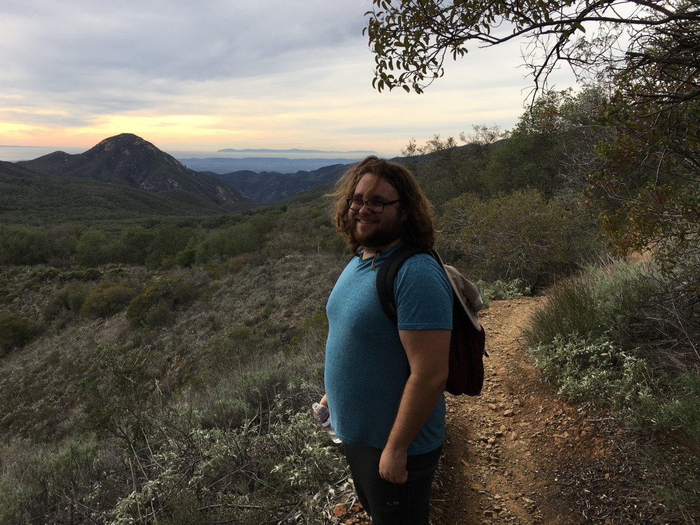

Current lab members

Joshua Arias
is an MS student studying the phylogenomics of Acanthaceae by combining transcriptome and genome-skim data. He is defending his MS thesis in Spring, 2019 and will be entering a NIH Introduction to Cancer Research Careers fellowship in Summer, 2019 with Dr. Sonja Berndt.
Laymon Ball
is a BS student who studied the rhizosphere diversity of chloridoid grasses and the reproductive biology of Justicia californica. Laymon was a PLANTS mentee for the Botany 2017 conference in Fort Worth, Texas. She also received a scholarship to attend the Systematics Research Institute at Rancho Santa Ana Botanic Garden for Summer, 2018. In Fall, 2019 Laymon will be entering Dr. Laura Lagomarsino’s lab at Louisiana State University to study pollination biology.
Angel Barnett
is a BS student working on the California Phenology Project in the Long Beach State Herbarium.

Robert Comito
is an MS student studying the molecular phylogeny of Barleria (Acanthaceae) using RADseq, sampling >170 taxa in this genus of 325 species. Robert is entering the Ph.D. program in Botany at Rancho Santa Ana Botanic Garden and Claremont Graduate University in Fall, 2019.
Sara Cuadra
is a BS student and the undergraduate collections manager of the Long Beach State Herbarium (LOB). She is a pivotal member of the Long Beach State team for the California Phenology Project
Mariangel Fernandez
is a BS student working with MS student Harrison McGowan on the flora of the Chiquito Basin. Her project is on the elevation and phenological changes of toyon (Heteromeles arbutifolia)

Harrison McGowan
is an MS student working on the flora of the Chiquito Basin in the Santa Ana Mtns, Cleveland National Forest, California. He received a scholarship to attend the Systematics Research Institute at Rancho Santa Ana Botanic Garden in Summer, 2018.

Amy Nguyen
is a BS student in the molecular lab. She is studying the anatomy of chloridoid grass leaves to test if particular leaf anatomy traits are correlated with the evolution of C4 photosynthesis subtypes.
Marina Rice
is a BS student working on the California Phenology Project in the Long Beach State Herbarium. Her project is on the elevation and phenological changes of white sage (Salvia apiana)

Former lab members

Nneka Aruoma assembled transcriptomes of California cord grass Spartina foliosa and sectioned leaves for her undergraduate honors thesis. She graduated with her BS in Biology in 2018 and is pursuing a Masters of Public Health.
Bryana Olmeda was the undergraduate collections manager of the Long Beach State Herbarium (LOB) in Fall, 2018 and she was also a wetlands restoration intern at Tidal Influence. She graduated with her BS in Biology in December, 2018.
Keana Tang was a BS student in the Long Beach State Herbarium (LOB) and an intern at the Los Angeles Natural History Museum. She was formerly an intern for the Trinity Shasta National Forest. She was also a PLANTS mentee at the Botany 2018 conference in Rochester, Minnesota and received a scholarship to attend the Systematics Research Institute at Rancho Santa Ana Botanic Garden for Summer, 2018. She is entering a MS in Dr. Brian Atkinson’s Paleobotany lab at the University of Kansas.
Emily Do was a BS student working on Acanthaceae leaf anatomy and graduated in December, 2018. She was awarded the Bennett and Peggy Kayser Research Award in 2018 to collect leaf samples at the Huntington Botanic Garden in Altadena, California.
Semaria Kassa was a BS student in the molecular lab and worked with Robert Comito on a RADseq phylogeny of the genus Barleria (Acanthaceae)
Brittany Betz is a Biological Desktop Technician with SWCA Pasadena. In the lab she co-authored the Flora of the Oasis de los Osos, a University of California Natural Reserve on the edge of the Sonoran Desert.
Sierra Coleman is a Project Coordinator at VCS Environmental. She worked on a checklist of the vascular plants of Pleasants Peak in the Santa Ana Mountains.
Asusena Figueroa worked on a checklist of the vascular plants of Pleasants Peak in the Santa Ana Mountains.

Carolina Contreras studied morphological variation in lodgepole pine populations in Southern California and is pursuing a career in zoos and conservation.
Hannah Garfin studied morphological variation in lodgepole pine populations in Southern California and entered the CSULB MS GIS program and also works at Tidal Influence
Karla Gonzalez assisted with fieldwork for the Flora of the Oasis de los Osos.
Mark Noda databased specimens in the LOB herbarium and is employed at Paragon Labs
Krystiana Oberhammer volunteered in the LOB herbarium and studied the elevation change of collections of Calochortus. Kryssy is employed at KP Environmental.
Bridgette Saroff modeled the climatic factors affecting the distribution of Justicia californica and is pursuing medical school.
Chenyu Shen studied the flowering duration of Justicia californica in the Long Beach State greenhouses and is pursuing graduate school in Biology
Renee Stewart volunteered in the LOB herbarium.
Alan Vera databased specimens in the LOB herbarium and is pursuing medical school
Jennie Nguyen worked on scientific illustration and is in veterinary school at Michigan State University.